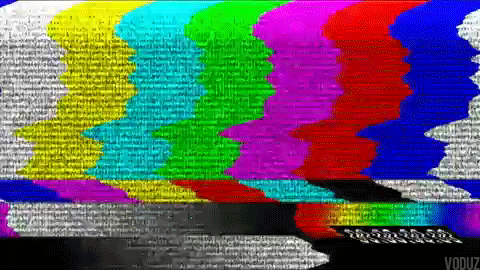

Interested in my work? Heres some examples:
Hospital Triage System
[Open Source]

A basic CRUD application built as a hospital bed management and patient triage system. Features include adding and managing patients, assigning and releasing beds, automated billing, and other administrative functionality. Developed as a team project during our freshman year for our SE-1243 class.
School publication website
[In Development]

A school publication website for the central echo designed to host articles, newsletters, magazines, videos, and archived issues. Built with a headless WordPress CMS to provide a modern, responsive platform for publishing, organizing, and accessing publication content. [CURRENTLY IN DEVELOPMENT]
Kepla - Astrophysics
[In Development]
Web-based keplerian orbits astrophysics simulation sandbox. Built as a solo project to help me learn Keplerian orbits and 2D graphics rendering.
Adobe Genuine Blocker
[Open Source]
Batch script I wrote in highschool that blocks Adobe Genuine Service from reaching your machine. Pulls a maintained IP/domain blocklist from `a.dove.isdumb.one` and appends it to the system hosts file to cut off Adobe's validation and telemetry traffic.